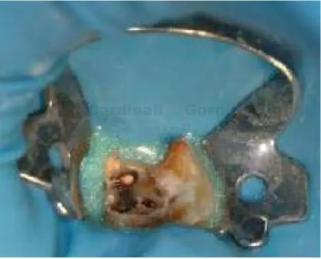
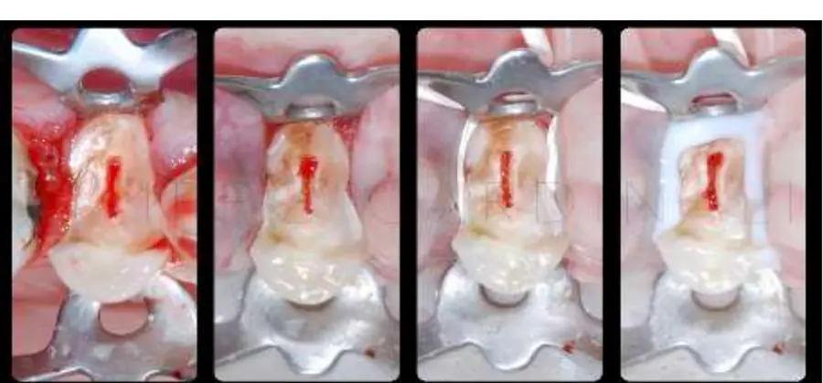

نسخه استخراجشده؛ ترجمه یا تأیید علمی انجام نشده است. وضعیت: captured
پرمولر اول بالا برای درمان ریشه آمده و تاجش تا نزدیک لثه پوسیده است. کلمپ پرمولر با فک صاف در آزمون کشیدن کمان جدا میشود. لبهی باکال زیر لثه است، ولی در رادیوگرافی ساختار سالم کافی بالای کرست استخوان دیده میشود. کدام کلمپ را امتحان میکنی؟

کلمپ پایدار با هر چهار نقطه روی دندان مینشیند. کلمپ ناپایدار به اتصال لثه و به ساختار تاج آسیب میزند یا از دندان میپرد. روی دندان تخریبشده این سه راه را بسنج:
نمونه: روی پرمولر اول بالای تخریبشده، کلمپ 212 لبهی لثه را کنار زد و ساختار باقیماندهی باکال را در عمق گرفت؛ درز باقیمانده با لیکوئید دم بسته شد.
روی دندان تخریبشده، ورق دور گردن دندان معمولاً کامل نمینشیند. اگر کلمپ پایدار است، آن را نگه دار و درز را ببند:

اشتباه رایج: دیدن درز و کنار گذاشتن کلمپ پایدار برای پیدا کردن کلمپی که «بهتر جفت شود». در دندان تخریبشده، کلمپ پایدار را نگه دار و درز را با مواد کمکی ببند.